strange music page
japanese strange music * * * A - 0
- AUNT SALLY
- あがた森魚
- あかね
- 安紀
- Adi
- Urban Dance
- After Dinner
- A-Musik
- Alterd States
- Arepos
- あらきなおみ
- undercurrent
- 飯島晃
- I.S.O.
- 井上鑑
- イル・ベルリオーネ
- YBO2
- VISIONS OF JAPAN
- vita nova
- Vincent Atmicus
- Warehouse
- 上野耕路
- ウニタミニマ
- 梅津和時
- 梅津和時KIKI Band
- unbeltipo
- EVERYTHING PLAY
- ESP (extra sensory perception)
- エコーユナイト
- Elephant Talk
- OOIOO
- 大熊亘
- 大友良英
- Otomo New Jazz Quintet
- 小川美潮
- おしゃれTV
- optical-8
- ONI
- オパビニア
- 思い出波止場
- おU
|
|
#えっとPHEWの居た幻のバンド、アーントサリーの謎の再発。（権利関係が謎）これまでずーっとCDになってなかったので、LPはかなりのプレミアが付いていました。
で、とうとう再発（実は聴いたことあったんだけど）20年たった今でも、この妙に醒めたような浮遊感はとても新鮮に響きます。BIKKEのギターとかも異様な存在感で、PHEWだけのバンドじゃ無かったことがわかります。
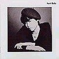
- Aunt Sally
- かがみ
- 醒めた火事場で
- 日が朽ちて
- すべて売り物
- Essay
- i was chosen
- 転機
- フランクに
- 無遊の少年
- ローレライ
- Aunt Sally
- cool cold
- ローレライ
- phew (vocals)
- bikke (guitars,vocals)
- mayu (keyboards)
- y-nakaoka (bass)
- t-maruyama (drums)
UNDO RECORDS: UNDO-001 (original release 1979)
#なんでも出てくる世の中みたいで、アーントサリーの発掘ライヴ音源が
P-VINE RECORDから出ました。
1978年から79年までの5回分のライヴ音源が収められてます、たったの一年間にこのバンドがどれだけ変化していったかって事がスゴイ伝わってきます。
音源が全部カセットテープでモノラルなんですけど、何だか音質とかそんな事関係無いような何かが詰まってるような感触でした。
アーントサリーのレコードを聴いたのは結構最近で(PHEWは結構前から聴いてたけど)なんだかこの音が「パンク」って言われてるのがイマイチわかんなかったんですけど、この発掘CDを聴いてなるほどなと思いました。レア音源とか発掘だのとか関係なしに、このCD自体かっちょよいです。
CD発売のイベントでやってた新宿タワレコのphew + bikkeのミニライヴなんてのも見てきました。やっぱりなんだか変わった感覚を持ってる人だなーと。(2001.4.15)
- かがみ
- Mony Mony
- すべて売り物
- 電撃バップ
- My Generation
- Essay
- i was chosen
- パノラマ島〜cool cold
- aunt sally
- 醒めた火事場で
- sha la la〜Lolita
- うぬぼれないで
- いつだって
- フランクに
- 音楽
- パラフィン中毒
- 岸辺
- 踊りましょう - 終曲
track 1-5. 1978.11.5 @ 心斎橋バハマ
track 6-9. 1978.12.28 @ 心斎橋バハマ
track 10-11. 1979.3.18 @ 心斎橋バハマ
track 12-15. 1979.4.30 @ 京大西部講堂
track 16-18. 1979.9.30 @ 神戸元町YAMAHA
- phew (vocals)
- bikke (guitars)
- mayu (keyboards)
- 片岡 (bass on 1-9.)
- 丸山孝 (drums on 1-15.)
- 中岡義雄 (bass on 10-18.)
- 小寺祥之 (drums on 16-18.)
P-VINE RECORDS: PCD-5629 (2001.3.25)
#前に洞でよしみさんに教えてもらってて、気にしてたんですけど。友達の家に遊びに行ったら持ってたので借りてきました。(その友達的には受けつけなかったらしいですけど、このCD)
個人的にも、あがた森魚さんってどうしても声がダメなので全然聞いてないんですけど、このアルバムは参加メンバー楽しすぎです。バックが半分初期Adiみたいな曲も有れば、福原まりさんがコーラスしてたり、初期pizzicato five(大好き)の佐々木麻美子まで参加してまして。そーゆー意味で面白かったです。(1999.9.25)
- ミッキーでGO GO GO
- X線もおどろく恋
- 太陽のラルティーグ
- 日曜だってダメよ
- スター・マウンテン・ロコモーション
- 二人はSPACY (Tea for two)
- Tambo No.9
- 101匹ミッキー忠臣蔵
- 二十四時間の瞳
- 羊の壊れた蹄で叩け
- ミッキーの禁じられた遊び
- 骨
- あがた森魚
- 渡辺等 (bass,mandolin,mandocello)
- 小林靖宏 (accordion)
- 近藤研二 (guitars)
- 矢部浩志 (drums)
- 相馬充 (flute)
- 西沢幸彦 (flute)
- 長谷川智樹 (programming)
- 美尾洋乃 (chorus)
- 福原まり (chorus)
- 丸尾めぐみ (piano,organ)
- 塩谷哲 (piano)
- 佐藤正治 (drums)
- 清水一登 (marimba,vibraphone)
- 金子飛鳥ストリングス (strings)
- 平内保夫 (trombone)
- 西山健治 (trombone)
- 南浩之 (horn)
- 須山芳博 (horn)
- 渡辺康蔵 (chorus)
- 和田博巳 (chorus)
- 佐々木麻美子 (duet vocal)
- 中原信雄 (bass)
- 宮田繁男 (drums)
- 吉川雅夫 (percussions)
- 佐野博美 (sax)
- 吉永寿 (sax)
- 岸義和 (trumpet)
- 星野正 (clarinet)
- 鈴木慶一 (guitars,chorus on 12.)
- 武川雅寛 (conga,tambourine,maracas,harp on 12.)
- かしぶち哲郎 (drums on 12.)
- べらまっちゃ (bass on 12.)
- 本多信介 (guitars on 12.)
- 渡辺勝 (guitars on 12.)
- 駒沢裕城 (steel guitar on 12.)
- 斎藤哲夫 (chorus on 12.)
Nippon Colombia: 32CA-2571 (1988.9.1)
#
暗〜いです。
シノラマの歌入りみたいなのを期待して
- におい
- SAVE
- #
- ホワイト
- 私はいつも思ってた
- 焼却炉
- それから
- 半夏生
- 心配
- Letter
作曲・作詞: あかね
track 8. 作曲: 坂本弘道
- あかね (synthesizers on 1-5.10.)(toy piano on 7.)(kalimba on 6.)
- くす美 (打楽器 on 1-3.)(recorder on 1.4.)(chorus on 1.6.)
- クリスチィヌ (violin)
- 斉藤哲也 (accordion,keyboards)(kalimba on 8.)(electric guitar on 4.)
- 坂本弘道 (electric cello,musical saw)(chorus on 2.)
- 宮崎玲児 (wood bass,bass)
- 田村健 (chorus on 6.)
- 小俣佳久 (operater)
大丈夫オフィス: DJB-01 (1996)
#元
高円寺百景の安紀さんが昔出していたソロアルバムです、御茶ノ水JANISの中古コーナーでゲット。
高円寺百景でのアレを想像するとちょっと違ってて、なんだかちょっと暗い雰囲気の歌モノです。これの更に昔はマリンコーニアってバンドやってたみたいですけど。
- KNIFE
- ATOMIC AGE
- HABANERA
- 夜と夢
- KIA JINZO
- 大地より
- MOON STRUCK
- 王様の牢屋
- 安紀 (vocals,keyboards)
- 三柴理 (piano,keyboards)
- Shiono Keiichi (bass,programming)
and music: AM-0001 (1990)
#Adiの1枚目です、このころはdrumsの佐藤正治さんがリーダーだったらしいです。実際Adiって佐藤さんのバンドで、佐藤さんがいた頃が一番ライヴとか頻繁にしてたみたいです。この頃の曲で収録されなかった面白い曲もとても多いとか...
でこの1枚目はその佐藤さん在籍時のCD。ちょっとボーカルがキビシイんですけど、1曲目とかインストの曲は格好良いです。
...実はその後にその頃のライヴ音源を聴かせてもらったんですけど、佐藤正治さんのドラムかっちょよすぎます。なんていうかこのアルバムの30倍くらい良いです、全然躍動感が違ってて...うーん、やっぱりライヴは見に行っておくべきモノなんですね。
- co lo ga re
- home
- tone's horns jones
- metalic jurassic
- Pulsate
- powdery moon
- cosmic snake
- nustarian
- walk on air
- 金子飛鳥 (violin,viola,vocals)
- 渡辺等 (bass)
- 佐藤正治 (drums,percussions,vocals)
- 塩谷哲 (piano,keyboards)
meldac: MECA-30001 (1990)
#佐藤正治さん脱退後、本間哲子(ex-PLATINUM KIT)さんをvocalに迎えてとてもPopになった(ほとんど別バンドのような感じです)２枚目。percussionに仙波清彦さんがサブメンバーとして参加、インスト部分の勢いが増したような感じです。金子飛鳥さんのelectric violinがとても格好良いです。
- アルクピーヤ
- シストーレ
- ADHISTA
- グリモリウム・ヴェルム
- Faltan
- Romantic Object-Chase to Mody Dick
- ナゾの球体
- Crossing
- エネルギー新聞
- Kingdom of Flowers
- See Yah !
- 小さいナゾの球体
- 金子飛鳥 (violin,viola,vocals)
- 渡辺等 (bass,mandolin,tabla,backing vocals)
- 塩谷哲 (piano,keyboards,backing vocals)
- 本間哲子 (vocals,guitars)
- 仙波清彦 (percussions,drums)
- 佐藤正治 (drums)
Victor/Roux: VICL-297 (1992.5.21)
#ミニアルバムです。１曲目以外は寄せ集めみたいな感じです(別に悪い意味ではないです)２曲目はTECHIEさんと金子飛鳥さんのボーカリゼーションで、３曲目は仙波清彦さんの色がつよいですし、４曲目は金子飛鳥さんのソロからの曲で、５曲目は１枚目のアルバムの曲です。
- 闇の長い人
- マチルダの樹にしるせ
- NINTOS
- SOFTLY
- WALK ON AIR
Victor/roux: VICL-2101 (1992.12.2)
#このアルバムを最後にAdiは活動停止。ポップさとマニアックさを共存させたようなアルバムです。7曲目とかこれ1曲だけ聴いたら完全にプログレだと思うような曲も入っています。
質感は完全にポップスの音なんですけど、アレンジとかスゴイです。
- Pi-ta-rit
- ジャンババヤ
- Co-Cu-u
- ARICA
- Snobに抱かれて
- チープな日々
- 開店休日
- ペーパーバビロンの庭で
- 水の贈り物 (Adi version)
- Stillness
- 水の贈り物 (Aska string version)
- 金子飛鳥 (violin,viola,vocals)
- 渡辺等 (bass,string instruments,backing vocals)
- 塩谷哲 (piano,keyboards)
- 本間哲子 (vocals)
- 仙波清彦 (drums,percussions)
Victor/Roux: VICL-475 (1993.10.21)
#成田忍さんのバンドURBAN DANCEの１枚目です。細野晴臣さんのNON-STANDARDレーベルから出ていました。プロデュースは高橋幸宏さんです。日本の80年代ニューウェーブの感じが良く出ています。
#テクノ歌謡シリーズからボーナストラック入りで再発されました、ボーナストラックは1枚目と2枚目の間にリリースされてたミニアルバム"CERAMIC DANCE"(細野晴臣プロデュース)の全曲です、これ目当てで買っちゃいました。
今聴くとやっぱりこっぱずかすぃですけどね、このアルバム。ださかっこいいというか...分かってるけど止められない良さがあります。成田忍バンザイ。(2000.8.22)
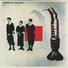
- WHY
- ひとコマの雨 -I'm On Your Side-
- CERAMIC LOVE
- すべては秘密の夜 -Whisper Of My Love-
- WE ALL GO DOWN
- HAMMER
- DR. DIET
- DREAMER -Old Man Looks Back-
- REMAKING OF NON-STANDARD MUSIC
- ALIENLOVER
- A MOMENT'S PLEASURE
- WHY YOU SAID GOODBYE
- SOFTLY TAKE IT
Produced by 高橋幸宏 (1-9.)
produced by 細野晴臣 (10-13.)
- 成田忍 (guitars,vocals,electronics)
- 小山謙吾 (bass,backing vocals)
- 松本浩一 (beat construction,backing vocals)
- 高橋幸宏 (drum samples,additional vocals on 5.)
- 細野晴臣 (electronics,voices on 8.)
- 小久保隆 (synthesizer operation)
- 川村祐子 (CMI)
- Fujii Takeshi (CMI,MC-4)
- Fukazawa Jun (MC-4)
TEICHIKU/NON-STANDARD: 25NS-3 (1985)
P-VINE RECORDS: PCD-1342
#2枚目、1枚目と一緒にテクノ歌謡でCDになるかと思ったんですけどなりませんでした。アルバムとしての完成度はこっちの方が高いと思うんですけどね。
前作のELECTRO/BEATな路線をそのまま推し進めて、更に曲想に幅が出てきた良いアルバムと思います。寺沢誠一さんのドラムがかっこいいんです、"SHINOBU"(URBAN DANCE以前4Dの頃の成田忍さんが出してたソノシート)かなんかをボーナスにして再発してくれないでしょうかね？＞P-VINE様。
ちなみにこの頃の出たノヴェラのボーカルの
五十嵐久勝さんのソロアルバムがほとんどURBAN DANCE状態です(まぁこっちもCD廃盤なんですけど)、URBAN DANCE好きな方は是非。
追記: テイチクよりCERAMIC DANCERを追加して再発。テクノ歌謡シリーズとかぶってるけど。(2001.11.21)
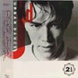
SIDE A:
- PSYCO
- CERAMIC DANCER
- KISS×KISS
- DAY AFTER DAY
SIDE B:
- DANCE A GO GO
- CAMERA OPUSCULA
- CRAZY LOVE
- CAMP
- 成田忍 (guitars,vocals,electronics)
- 小山謙吾 (bass,backing vocals)
- 松本浩一 (beat construction,backing vocals)
- 梅津和時 (alto sax on A-1.)
- 帆足哲昭 (percussions on A-1.B-2.)
- 寺谷誠一 (hi-hat on A-1.2.3.4.B-1.2.4.)
- 鳴津ゆきお (bass on A-1.)
- 片山広明 (baritone sax on A-2.B-3.)
- 横川理彦 (violin on A-2.B-4.)(sampling on B-1.)
- 岡野ハジメ (bass on B-4.)
- 菅原弘明 (synthesizer manipulate on A-4.B-1.4.)
- 沢井原児 (sax on B-4.)
- 布袋寅泰 (guitars,bass on B-1.)
TEICHIKU/NON-STANDARD: 28NS-11 (1986)
TEICHIKU: TECN-18775 (2001.11.21)
#1991年にイギリスのRecommededよりリリースされたアルバム、1982のシングル"アフターディナー/夜明けのシンバル"と1984のアルバム"グラスチューブ"から全曲収録の他、ライヴなどから集めた音源をまとめたもの。硝子細工のような精緻な音響....きっと2本からしか出てこない音です。
このアルバムも本当に奇跡的なアルバムと思ってます、変わった音が好きな人は見逃すべきじゃないと思います。
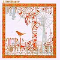
-after dinner-
- アフターディナー (after dinner)
- セピアチュール (sepia-ture)
- 加速度のエチュード (an accelerating etude)
- ソニャドール (soknya-doll)
- おじょうさんとシャベル (shovel and little lady)
- 夜明けのシンバル (cymbals at dawn)
- グラスチューブ (glass tube)
- デザート (dessert)
- セピアチュール II (sepia-ture II)
-live editions 1986-1990-
- 胡桃 (a walnut)
- 夜明けのシンバル (cymbals at dawn)
- RE
- キッチンライフ (kitchen life)
- グラスチューブ (glass tube)
- "マシュルームはいかが？"変奏曲 (the variation of "would you like some mushrooms")
- 赤い靴ユートピア (ironclad mermaid)
- アフターディナー (after dinner)
- 髪モビールの部屋 (the room of hair-mobile)
- Haco (vocals,keyboards)
- 宇都宮泰 (synthesizers)(voice on 1.6.)(bass on 7.)
- 横川理彦 (bass on 2.7.9.11.14.16-18.)(violin on 2.9.12)(mandolin on 10.13)(vocals on 12.)
- 泉陸奥彦 (guitars on 10.11.14.17)
- 小森御幸 (guitars on 1.6.7.8.)(drums on 1.2.6.7.9.)(bass on 2.7.9.)
- チャカ (bass,percussions on 1.6.)
- 志村学 (piano on 1.6.)
- Okuda Kogaibou-senkyu (tabla on 8.)
- Kawaguchi Masaaki (snare on 2.9.)(surumondal on 8.)
- 黒田清一 (tenor sax on 9.)(bass on 10.11.14.17)
- kaname nakagawa (alto sax on 9.)
- taniguchi shinichiro (narration)
- 井上一路 (percussions on 10.11.13.14.16.17.)(taiko on 13.16.)
- 山形秀明 (drums on 10.11.14.17.)
- 一色洋輔 (piano on 13.16-18.)
- 福島匠 (violin on 13.16.18.)
- 北田昌弘 (steel drum on 15.)
- 山田直樹 (prepared guitar on 15.)
Recommeded records: rer-adcd1
#アフターディナーの2枚目、前作のイメージと大きくは変わりませんが、よりHacoさんの声を中心とした音になっています。前作で音響的なことをやっていた宇都宮泰さんがぬけたのが影響してると思います。
胡桃とかフツーの曲としてもとても魅力的かと。
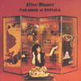
- Paradise of Replica
- 胡桃 (a walnut)
- キッチンライフ I (kitchen life I)
- モーターサイクル (motercycle)
- キッチンライフ II (kitchen life II)
- 赤い靴ユートピア (ironclad mermaid)
- Dancing Twins
- カノプスの箱
- ちょっとバードウォッチングに (I'll just go birdwatching)
words and music by Haco
excerpt 8. music by 横川理彦
- Haco (vocals)(volley ball on 7.)
- 一色洋輔 (keyboards,piano,prepared piano)
- 井上一路 (percussions on 1.3.6.)(glockenspiel on 2.)
- 北田昌宏 (keyboards on 1.5.)(drums on 2.3.)(guitars on 3.6.)
- 黒田清一 (Tung-siao on 4.)(Hichiriki on 7.8.)(percussions on 8.)
- 山形秀明 (drums on 6.8.)(tambourine on 8.)
- 横川理彦 (keyboards on 1.)(bass on 6.8.)(percussions on 8.9.)(charango on 9.)
- 福島匠 (violin on 6-9.)
- 山田直樹 (guitars on 8.)
- 木下真和 (pianica on 2.)
- 尚永旬示 (clarinet on 2.4.8.)
- 松村和美 (cello on 6-9.)
- 宮崎隆暁 (tenor sax on 2.4.7.)
- 宮本正一 (flute on 2.4.)
- 八重いずみ (oboe on 2.7.8.)
zero records: 0-1289 (1989)
#これも捜し回ってたんですけど、新宿disk unionにて発見しました。見つかるときはドバッと見つかる傾向が有るみたいです。ちなみにこの日はちょっと大収穫の日でした。
人脈的には、Che-Shizuとかコンポステラとかに繋がって行く人達です。なんか坂本龍一まで参加してました。
でもこれも想像してた音と違いました、もっとスクウェアな感じかと思ってたんですけど。ただ想像したのと違いましたけど、これは逆に良かったです。(1999.5.29)
Red Chrysanthemum Side:
- El Puebro Unido Jamas Sera Vencido (不屈の民)
- a) Vorwarz (前進)
b) Die Einheitsfrontlied (統一戦線の歌)
c) Ppuripha
- On Suicide (自殺について)
- There Will Never Be Another
- I Dance
Black Chrysanthemum Side:
- Anti-Jap Rap (反日ラップ)
- El Vito
- Die Moorsoldaten
- Nilririya
- 竹田賢一 (大正琴,flute,harmonium,vocals)
- 小山哲人 (bass)
- 石渡明廣 (gutiars)
- 久下恵生 (drums)
- 時岡秀雄 (saxes)
- 篠田昌巳 (saxes)
- 工藤冬里 (piano,organs)
- 高橋鮎生 (vocals on A-2.)
- 千野秀一 (moog synthesizers on A-2.B-1.)
- 箕輪攻機 (tabla on B-4.)
- 高橋文子 (vocals on A-3.)
- 坂本龍一 (piano on A-5.)
- 佐藤春樹 (trombone on B-4.)
- カムラ (vocals on B-4.)
- 山本護 (cello on B-4.)
- 大熊亘 (backing voice on B-1.)
- 三浦リョウコ (vocals on A-4.)
- 河野優彦 (trombone on B-1.)
- John Duncan (whilspering on B-3.)
Balcony RECORDS/Zeitgenossische Musik Disk: DI-830 (1984)
#神戸のトリオ、強力なアルバムです。God Mountainから出たこのアルバムは多数のゲストを迎えています。
- martzmer
- emer
- silly old bear
- dan-go
- d*w*d
- issai-kai-ku
- billiken
- motif a
- sosukan
- da dou
- suite "circle"
composed: 内橋和久
executive produced:
Hoppy神山
- 内橋和久 (guitars,effects)
- ナスノミツル (bass)
- 芳垣安洋 (drums,percussions)
- 梅津和時 (alto sax,clarinet on 10.11.)
- おおたか静流 (voice on 11.)
- 勝井祐二 (electric violin on 5.11.)
- 坂本弘道 (cello on 1.)
- さがゆき (voice on 11.)
- 高良久美子 (vibraphone,perscussions on 11.)
- Ned Rothenberg (alto sax on 4.)
- 橋本一子 (piano,voice on 11.)
- 広瀬淳二 (tenor sax on 8.11.)
- 巻上公一 (voice on 6.11.)
- Motoki Yoshinori (tapes on 9.11.)
God Mountain: GMCD-015
#えーと上野のディスクユニオンにて、\500なら買いでしょう。
(2000.8.6)
- POLIDORI
- ALEX
- TRAVIS
- ADEL
- GABO
- MONTAGUE
- JACOB
- HANNIBAL
- KAISER
- 内橋和久 (guitars)
- ナスノミツル (bass)(vocals on 4.6.)
- 芳垣安洋 (kit drum)
ZENBEI RECORDS: ZEN-005 (1997)
#元Killing Timeの清水一登さんとれいちさんの夫婦バンドの１枚目。このアルバムではピアノとボーカルを基本に少しずつゲストが参加する形です。シンプルな編成ですがピアノの響きがとてもきれいです。
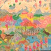
- Colours
- Waltz #3
- Ballad #1
- Ab Dance
- Meguro no Karasu
- Ballad #2
- Blumengruss
- Mayonaka
- れいち (vocals,drums)
- 清水一登 (piano,keyboards)
- 青山純 (drums,percussions on 4.8.)
- mecken (bass on 4.8.)
- 渡辺等 (contrabass on 8.)
- 板倉文 (guitar synthesizer on 5.)
- 浦山秀彦 (guitars on 4.)
- 斎藤ネコstrings (strings on 8.)
vivid sound/Pin label: pin-02
#ライヴ録音の２枚目です。ピアノとベースとボーカルだけの編成ですがこのバンドは逆にシンプルさが持ち味だと思います。

- それそれ
- 遠足
- BALLAD #1
- WALTZ #3
- AN ENGLISH COUNTRY GARDEN
- MORNING LIGHT
- CYFRI'R GEIFR
- PLINK
- Ab DANCE
- BALLAD #2
- HOMEWARD
- MAYONAKA
- お・や・す・み
- こしくだけ -'ole i pau ka'i'ini-
- れいち (vocals,drums)
- 清水一登 (piano,synthesizer,bass clarinet,chorus)
- 渡辺等 (bass,mandolin,ukulele,chorus)
AREPOSONGS: AREP-05 (1995)
#えーとながらくAREPOSのライヴには行っていなくて、入手できずにいました。PESTと対バンのおQのライヴ、吉祥寺マンダラ2にて入手。今回はスタジオ盤で、結構丁寧に仕上がってます。ちょっとライヴの雰囲気(前作みたいな)とは違います、箱庭的サウンド。清水さんのメロディーが浮き上がってくるようなピアノってやっぱ良いです。(1999.12.14)
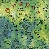
- RONDO
- えんそく (Excursion)
- PLINK
- もいちど (Revival (for Kobe))
- WELCOME
- 青いフラスコ (A Blue Flask)
- 森の中のまばたき (A Fleeting Glance in the Wood)
- RAINY RAG
- 深海のワルツ (Waltz in a Deep Sea)
- HOMEWARD
- お・や・す・み
- れいち (vocals,chorus,drums,percussions)
- 清水一登 (keyboards,clarinet,bass clarinet,xylophone,percussions)
- 渡辺等 (electric upright bass on 3.6.9.10.)(electric mandolin on 3.)
- 浦山秀彦 (guitars on 1.5.6.)
AREPOSONGS: AREP-1010 (1999)
#元ハイポジのベースのあらきなおみさんの1枚目のソロアルバムです。素朴な感じのちょっと変なポップソングです。鶴来正基さんが良い感じです。
- 宇宙人の来襲
- サルビアの花
- 神様のdub song
- 控え目な人
- 青い日々
- 海と釣と子供ら
- あらきなおみ (bass,vocals)
- 鶴来正基 (keyboards,synthesizers)
- 岡部洋一 (percussions)
- 今堀恒雄 (guitars)
- 菊池成孔 (saxes)
Rittoh music/pi: RMPI-1002 (1995)
#あらきなおみさんのライヴのCD-R、お台場のso-net cafeでのミニライヴの物販で買いました。1994から1996頃にライヴをやっていた頃のライヴ音源から五曲収録されてます。この頃2回くらいライヴを見にいった記憶があります、もっともっと収録されてないような曲が有るはずなんですけど.....もっと曲沢山入れて欲しかったです。
- 野に咲く花よ
- 空気
- 遠い目
- 狛犬と草いきれ
- I Love You
- 荒木尚美 (bass,vocals)
- 鶴来正基 (keyboards)
- 今堀恒雄 (guitars)
- 岡部洋一 (percussions)
#斉藤哲也さん(福間美紗さんと一緒にやってる方)のソロプロジェクト、2枚目です。
というかコレはかなり好みかも、なんで今まで聴かなかったんだろう....音的には栗コーダーカルテットをちょっとシリアスにした感じ。私にはとても上質のチェンバーミュージックにも聞こえます。
ザバダック系の人にもプログレな人にも福間未紗な人にもワールドスタンダードとかな人にも受けそうな気もします。ちょっと怖いくらい綺麗な音、一枚目も買いにいこ。(2000.12.21)
- 湖(2)
- 夢(9)
- 井戸
- 訪問者
- 一緒に井戸に帰ろう
- カラス
- ブランコ(回転)
- 雨(2)
- hana-batake
- 斉藤哲也 (piano,kalimba,claviora,accordion,rhodes,percussions,noise)
- 安井隆 (soprano recorder,alto recorder)
- Shoji Yuko (bass recorder,tenor recorder)
- Kitamura Masahiko (fagotto)
- Asai Ai (bass recorder,tenor recorder)
MIDI CREATIVE: CXCA-1071 (2000.10.21)
#えーと繊細な感じのギターの旋律に対して、ゲストの楽器が寄り添うでもなく崩すでもなく音を出していきます。チェンバーミュージックやJohn Faheyの音楽を一瞬思い起こすような感じですけど、聴けば聴くほど何とも言い難い世界です。
水面の波紋が消えるような感じでギターの音が響いて消えていきます（このCDで音がミュートされる事は無いです）、
「Cathode」あたりの大友良英にも似たような、残響を聴かせるような音と思います。
最初は共演者のメンツを見てジャズロックみたいなのを想像してたんですけど、（良い意味で）期待とは全く違う音でした。音響派とかポストロックとかが出てくる以前の1990年にこんな音楽が日本に存在してる事にはビックリしました。
残念ながら、飯島晃氏は1997年に亡くなっています。(2002.12.19)
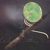
- いばらのサギ師 (Five Songs For A Fox In The Thorn)
-
-
-
-
- 月の谷のピレア (Pilea Moon Valley)
-
-
-
- 背広の男と象の庭 (A Gentleman And The Elephant Garden)
-
-
- ロビン (Robin)
-
-
-
- 待つための根拠 (A Waiting Grounds)
-
-
-
- セラフィタの季節 (Season Of Seraphita)
- 飯島晃 (guitars)
- 近藤達郎 (accordion,harmonica)
- 篠田昌巳 (soprano sax)
- 向島ゆり子 (violin)
- 清水一登 (vibraphone)
- れいち (percussions)
puff-up: puf-2 (1990)
#I.S.O. = Ichiraku Yoshimitsu + Sachiko M + Otomo Yoshihide です。GROUND-ZERO解散以降の、正弦波の極小の世界です。クレジットを見るとこれが1998年の2月の録音で、GROUND-ZEROの解散のライヴが1998年の3月だったみたいです。
極大から極小へ、爆縮って言葉が有ったと思うんですけど、そういう事を思わずにいられない位の(表面上の)音の変化です。この辺の事はちょい前に出てた"AVANT MUSIC GUIDE"って本に少し載ってましたので興味の有る方は是非(あんまり音楽ガイド本って買わないですけど、この本は濃くて良かったです)
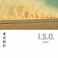
- GRAVITY TIME
- GRAVITY TIME
- GRAVITY TIME
- GRAVITY TIME
- 一楽義光 (electronics,percussion)
- Sachiko M (samplers with sine wave)
- 大友良英 (records and CDs with mixer,organ,guitars)
- 益子樹 (beat on 1.)
AMOEBIC: AMO-ISO-01 (1998)
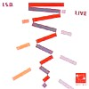
- 京大西部講堂 1
- Radio Grenouille
- 京大西部講堂 2
- Pepperland
- 京大西部講堂 3
- 一楽儀光 (electronics)
- Sachiko M (samplers with sine wave)
- 大友良英 (records and CDs)
TRANSONIC RECORDS/ZERO GRAVITY: ZGV-023 (1998)
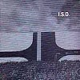
- A
- B
- C
- D
- 一楽儀光 (electronics)
- Sachiko M (samplers with sine wave)
- 大友良英 (records and CDs)
AMOEBIC/Alcohol: ALIS0CD (1999)
#長いです(75分くらい)暑いです(37度後半くらい)キツイです(ビューラーでマツゲ2倍してるくらい)
えーとYBO2のライヴ盤です延々ずーっと激しい演奏が繰り広げられます。間違っても風邪気味な時や、眠る前などには聴いちゃダメです。目に見えないテキ(なんだよそれ)に対する怒りを蓄積させる時に使いましょう、プシュー。
- 光の国
- WARCHILD
- 空が堕ちる
- BOYS OF BEDLAM
- EL SALVADOR
- AMERIKA
- 猟奇歌
- TRASH! CRASH!
- SEASONS
- LIVING IN LABYRINTH
- HOWL, BACK & CRY
- SAHARA SUNRISE
- PLAGUE
- THE END -DEADHUMAN'S PARADISE
- 北村昌士 (bass,voice)
- 吉田達也
- 河本英樹 (guitars)
SSE COMMUNICATION: SSE-8014-CD
#これは....Yahooオークションに出てるの見掛けて、確か\1600くらいでゲットしました。便利な世の中ですね。
けっこうおとなしいアルバムなんですけど、"Pre-
ADI + 鈴木さえ子"といった感じの(これが聴きたかったんです、sightさま情報多謝)5曲目なんてカッチョイイです。
- SARDANA -Part I-
- SARDANA -Part II-
- 遠い波
- 5000本の樫の木
- POINTITLLE CITY
- TOKYO INSTALLATION
- ENTRECHAT DIX
- 鳥の唄
- 井上鑑 (midi-piano,keyboards)
- 井上頼豊 (cello)
- 苅田政治 (cello)
- 川村昌子 (koto)
- ブライアン山越 (17st + 20st. koto)
- 金子飛鳥 (violin)
- 佐藤正治 (drums)
- 鈴木さえ子 (marimba,vibraphone,hi-hats)
PONY CANYON/SWITCH: 32WWD-0006 (1988.11.21)
#プログレ系のジャズロック、吉祥寺シルバーエレファントとかでやってたような。
14曲目「天国と地獄」の曲調変わる所の展開が目茶目茶かっちょいい。何度聴いてもかっちょいい。
ドラムの岩瀬立飛さんは最近あちこちで名前お見かけしますね。
- 453分間料理地獄 正常位 (in 453minutes infernal cooking FORWARD)
- 首煮込汁 (human head soup)
- 木製オーブンレンジ (wooden oven)
- 大仏 (giant omege of Buddha)
- おさる日記 (diary of Mr.Monkey)
- すぱいす (TAPPY's spices)
- ノーパンああ素晴らしい美人 (wow! brilliant beauty with no scanties)
- なおちゃんのきぬずれ (Nao chan's rusting)
- フレンチドレッシング・タブー (Frenchdressing taboo)
- ポリエチレンの木の下で (at the foot of polyethylene tree)
- 多摩川シャッフル (Tamagawa shuffle)
- アグ (agoo)
- 高円寺人情酒場 (Koenji Sake bar)
- 天国で地獄 (one infernal fact in paradise)
- 453分間料理地獄 後背位 (in 453minutes infernal cooking BACKWORD)
- 井戸沼尚也 (guitars)
- 小倉和夫 (bass)
- 谷口博史 (keyboards)
- 高野浩雄 (tenor sax)
- 岩瀬立飛 (drums,percussions)
BELLE ANTIQUE: BELLE-9483 (1994)
#ノイズとミュージックコンクレート、私には何だかよく分りませんでした。売っちゃった。
- Sound I
- Sound II
- Sound III
OUR TOUCH RECORDS: VOJ-0979 (1991)
#
bondage fruitからドラムとバイオリンを引いた編成のアコースティックユニットかな？高野文子さんの綺麗なジャケットに惹かれて買っちゃいました。
映画音楽みたいな感じでイイかな〜なんて思ってると、一転してアバンギャルドになったりもします。もーちょい落ち着いて聴きたいよーな気もするんですが。メロディにおいしい所が無くってちょっと残念。
あ、でも13曲目の鬼怒さんの軽快な「ダバダバ〜」ってのは非常に良いです、ほんとに。
ewe recordのページ(試聴可)(2002.7.19)

- Fuh
- Cat box
- Ezumi
- Good night honey
- MUGI no march
- Cazoo suite #5
- Bunbaka
- Fuhi Fuhi
- Liquid Bounty
- Mad cafe
- 8/28
- Dog and Pepper
- Tonekey
- Endless game of cat and mouse
- Mana's roux
- 鬼怒無月 (guitars,banjo,ukulele,synthesizer,organ,bottle,cazoo,voice,junk)
- 高良久美子 (vibraphone,marimba,percusions,synthesizer,organ,recorder,cazoo,voice)
- 大坪寛彦 (bass,ukulele,recorder,cazoo,bottle,junk)(vocals on 14.)
- TECHIE (vocals on 14.)
- Nishi Yuko (cup & sigh on 11.)(voice on 4.)
- Suzuki Fumie (magazin & sigh on 11.)
- Iguchi Ayako (pen & sigh on 11.)
ewe records: EWCD-0059 (2002.7)
#うーん、凄い面子だ。芳垣安洋率いる9人編成のアフロ/ジャズ/ロックバンドです。
前々から一回ライヴを見たいなーとか思ってる内に、CD発売になっちゃいました。このメンバーのどのバンドの音とも違うよーな感じの音。構築度高めです。
一瞬
Mauro Paganiのソロなんて連想しちゃいました、vioin×2ってのが効いてます、勝井さんと太田さんのキャラクター全然違ってて面白い。
ただCDだとこんだけの人数揃える必然性はあんまり感じないかな、ライヴの方が楽しそうな気がします。(2002.11.25)
- 眠れぬ夜のために (For yuor sleepless night)
- Makam Yegah
- Turkish Van
- 生姜煙草を吸いながら (Smokin' with Ginger Cigarette)
- 糸杉のある麦畑 (Cornfield with Cypresses)
- ムギの踊り(あるいはEXPO'70)
- "魚鳥"とフンデルトヴァッサーの家 ("SAKANA-TORI" und Hundertwasser-haus)
- 緑の爪 (Green Claw)
- Jungle Boogie
- 大建設〜雷マラソンのテーマ (The Great Construction including Theme of Kaminari-Marathon)
- キノ (Kino)
- 芳垣安洋 (trap drum,percussions,effects,voice,trumpet)
- 青木タイセイ (trombone,pianica,voice)
- 松本治 (trombone,voice)
- 菊地成孔 (sax,voice)
- 勝井祐二 (violin,effects,voice)
- 太田恵資 (violin,arabic voice)
- 水谷浩章 (bass,percussions,voice)
- 岡部洋一 (trap drum,percussions)
- 高良久美子 (vibraphone,marimba,percusions)
ewe records: EWBE-0006 (2002.11.21)
- A portee de voix (呼べば応えるところに)
- Checkmate (王手詰め)
- Verdance
- Trois trompe-l'eil (三つのだまし絵)
- Valse palindromique (順逆同順ワルツ)
- Image de film "Ballet mecanique" (バレエ・メカニックの印象)
Suite pour l'eau courante (水道組曲)
- 1.Reservoir (貯水池)
- 2.Station d'epuration des eaux (浄水場)
- 3.Chateau d'eau (給水塔)
- 4.Robinets (水道栓)
Bach concrete
- 1.Ouverture Francaise (フランス風序曲)
- 2.Impromptu (即興曲)
- 3.A la maniere de finale de concerto grosso (コンチェルトグロッソのフィナーレ風に)
- Cuisine de Qwerty (クワァティの厨房)
- Greenthought (緑為す想い)
La nuit des encyclopedistes (百科全書派の夜)
- 1.Preambule tragi-comique (悲喜劇的緒言)
- 2.La grue de bois (木製のクレーン)
3.La mer artificiel (人工の海)
- Musica per giardino botanico (植物園のための音楽)
- Muses electriques (電気のミューズたち)
ALFA RECORDS: ALCA-230
バレエ組曲第一番
- 序曲〜儀式
- 手術のルンバ
- グロテスクなユーレスク
- ダンス・セオンス
- 悲劇的大詰め
- ハインリッヒ・ヴぇルナーの「野薔薇」による回想
バレエ組曲第二番「偶意的」
- 最後から二番目の前奏曲(演奏は随意)
- 本当の前奏曲(演奏は随意)
- 田園生活
- 嫉妬と欺瞞
- 借物の思想
- 逆説無き悲観主義
- 無条件の恍惚
ディスク2への予告編による変奏曲
- テーマ
- 模倣術 I
- 「ひとで」風に
- 模倣術 II
- レジュイサンス
バレエ組曲第三番
- プロローグ:牧歌
- 序曲
- 子守歌
- パストラール
- ラメント
- 小夜曲
- アントレ
- アリエッタ
- バガテル
- カプリース
- 幻想曲
- プレザントリ
- ドゥ・ザ・コンガ
- 小トッカータ
- メロドラマ的状況
- 間奏曲
- バーレスク
- 無窮動
- ロマンツァ
- 夜想曲
- 人形劇風に
- パ・ドゥ・トロワ〜アイルランド風に
- ダンス・エキセントリック〜シミー
- トラジーコミック〜ボレロ
WAVE DISTRIBUTION: WWCP-7113/4 (1993.10.25)
- Connotations
- Ritratti di N.R. per Quartetto di Sassofoni
- Fugato
- Quodlibet
- Caddilac
- Finale:Sonata Allegro tipico
- Quartetto per Sassofoni
- Toccata/Aria/Fuga
- Allegro/Presto/Allegro/Presto/Andante/Allegro
- 上野耕路
- 鈴木智文 (guitars on 1.)
- 後藤勇一郎 (violin on 1.)
- 清水靖晃 (alto sax on 1.)
- HARMO SAXOPHONE QUARTET (2-7.)
SYNERGY: SYDA-007 (1998.2.21)
#れいちさんと近藤達郎さんのデュオ、keyboardとdrumsとvocalだけで演奏されている。編成的には
Areposに近いですが、出てくる音は違います。
陽気な若い博物館員たちに収録の近藤達郎さんの曲をさらにユニットとして進めた感じかな？ミニマルポップス。
A>>>reposのアルバムと比べると清水一登さんと近藤達郎さんのカラーの違いがわかって面白いかも。この頃は近藤達郎さん、今よりも実験的な曲とか書いてます。
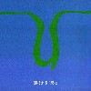
- シャツ (the shirt)
- 場所 (the place)
- 空 (sphere)
- 走る (running)
- 夜 (in the night)
- パレード (a parade)
- 微笑む (grinning)
- 世界の縁 (the edge of the world)
- 近藤達郎 (keyboards,piano,accordion,banjo,vocals)
- れいち (drums,xylophone,vocals)
vivid sound/Pin label: pin-01 (1990)
#KIKI Bandの3枚目、プログレファン的には鬼怒無月さんの「Crawler」が5拍子でアグレッシブに弾きまくっててかっちょいーです。
ほかの曲も濃いです「ドガガガガ・ギュイギュイ・ブピー」って感じです。ジャズロックのジャズとロックの割合が2:8くらい。COLLOSEUM IIとかに似た雰囲気も。(2002.10.29)
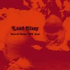
- IZUMOYA
- Crawler
- UNI
- 玄武
- 地上の月
- IZUMOYA
- 梅津和時 (saxes,clarinet,recorder)
- 鬼怒無月 (guitars,synthesizers)
- 早川岳晴 (bass)
- 新井田耕造 (drums)
ewe: EWCD-0053 (2002)
#凄いメンバーです。内容はフツーでないJAZZかな、ヒカシューのメンバーも参加しています。
- rose de sahara
- ラクーン
- 西恋ケ窪行進曲
- シャクシャインの戦い
- isei
- 歌舞音曲
- bogo bogo
- k
- シェルブールから
シェルブールの雨傘
- 梅津和時 (saxes,clarinet,recorder)
- 今堀恒雄 (guitars on 1.2.3.4.5.7.9.)
- 早川岳晴 (bass,cello on 2.3.5.7.9.)
- 三好功郎 (guitars on 1.4.)
- 坂井紅介 (bass,talking drums on 4.6.)
- 清水一登 (keyboards,piano on 1.2.3.4.5.7.9.)
- 新井田耕造 (drums,percussions 1.4.)
- ヤヒロトモヒロ (percussions 1.4.)
- れいち (drums,percussions on 2.3.5.6.7.9.)(vocals on 9.)
- 斉藤ネコ (violin on 7.9.)
- 金子飛鳥 (violin on 6.)
- 巻上公一 (vocals on 6.)
- 三田超人 (guitars on 6.)
- 井上誠 (organs,synthesizers on 6.)
- 坂出雅海 (bass,toys on 6.)
- 野本和浩 (bass clarinet on 6.)
- 板橋文夫 (piano on 8.)
- 平沢進 (vocals on 9.)
NEC AVENUE: NACJ-1001 (1990)
#tipographica解散後の今堀恒雄のソロユニット"unbeltipo"の1枚目。4曲目は"時代劇としての高速道路"(
floating opera収録)の続きですね。
打ちこみ主体で、テクノというかDJ的な発想の音楽に聞こえました。やっぱ
外山明の関節外れたようなドラムが無いのが大きくて、tipographicaとは随分違って聞こえます。
たしかに格好良いけど、tipographicaを初めて聴いた時と比べると？まだまだ今後に期待って感じですかね。(1999.10.31)
- UBT4
- UBT3
- UBT1
- JDvers3
- 今堀恒雄 (guitars,programming)
- Kamata Kiyoshi (drums on 1.2.)
- 大儀見元 (percussions on 2.3.4.)
- 沖山優司 (bass,turntable on 2.)
- 高桑英世 (flute on 3.)
- 数原晋 (trumpet on 2.)
- 菊地成孔 (sax on 2.4.)
sistema records: SICD-2 (1999.7.11)
- ルー・ルー・モナムール
- アミチェ・アムール
- エルフェ
- オリーヴの青
- 恋人たちの過ごした時間
- パッション・ダモーレ
- 休日
- S･A･Y･O･N･A･R･A
CROWN: CRCP-20156 (original release 1987)
- Prologue (M.C.)
- Ramwong (4 Folkdances of Thailand)
- Love Me Benten
- Faith
- ?Dong-Feng-Jung?
- Singing Bamboos (Love-Dance)
- Lull in A Rain
- Posh
- 浜辺の歌
- A World of Whisper
- Universal Egg
- The March of Samese Children, from The Motion Picture "KING AND I"
- Here is Happiness
- Rush Hour in Bangkok
- Orff Echo
- Epilogue (M.C.)
- Flower of Japan
produced by 鈴木惣一郎
exective produced by 小林克也
- 鈴木惣一郎 (Macintosh SE/30,marimba,vibraphone,charango,mandolin,steel-drum,pianica,guitars,toy drum,太鼓,ukulele,slit drum,bongo,China-bell,ching,ranatek,bass,drums,maracas,Indian tambourine,木魚)
- 三島豊明 (piano,khim,vibraphone,khen,marimba,,orange-box,synthesizer,computer,sound effects)
- 鴨宮諒 (computer,glockenspiel,strange dance)
- 向島ゆり子 (violin,琴,piano)
- 山口優 (computer,Korg M-1)
- 小山謙吾 (bass)
- 大熊亘 (笙)
- Igasaki Yoko (笙)
- Takakuma Kenji (篳篥)
- Noguchi Hiroyuki (fagotto)
- Fujiwara Akira (pan-flute)
- Sato Noriyuki (violin)
- Tomoda Hiroaki (violin)
- Nagamine Takashi (violin)
- Nakatate Hideaki (viola)
- Kubota Akihiro (viola)
- Sato Ritsuo (cello)
- Hirata Shohei (cello)
- 横川理彦 (charango)
- 蓮見重臣 (xylophone)
- Sayamon Chongrungrung (Thai narration)
CROWN: CRCP-20022 (1991.9.21)
#ワールドスタンダードの鈴木惣一郎さんと美島豊明さんのエヴリシングプレイ、3枚目(最後のアルバム)です。
帯には「モンド/ラウンジ/アブストラクト/トランス」なんて書いてありましたけど.....そんな説明されてもなぁ...
とりあえず
ワールドスタンダードと基本は一緒で、歌の無いポップな音楽。このアルバムでは少しだけハウスっぽいセンスを感じました、そこがワールドスタンダードと違う所かな？
なんだか長めの曲(FEEL THE SUN/BEST FRIEND/TOMORROW)は、後半がトランステクノみたいな感じになってってキモチイイです。特に13曲目のピアノのミニマルな展開なんて、天国の音楽みたい。たださすがにトータル15曲68分は長すぎるかなぁ...
ちなみに、いつもの事ですがこのCDも現在廃盤みたいです。ウチのページで紹介してるのそんなのばっかしですが。(2001.9.1)
- 三本足 (3 LEGS)
- BACK TO THE EGG
- 燃える太陽が如く (HOT AS SUN)
- 野生の生活 (WILD LIFE)
- ロミオとジュリエット
- MAMUNIA
- OO YOU
- 君に輝く太陽を感じよう (FELL THE SUN)
- MOMMA MISS AMERICA
- 魂のジュリエッタ (GIULIETTA DEGLI SPIRITI)
- C. MOON
- 田舎暮らしの夢見人 (COUNTRY DREAMER)
- 最愛の友 (BEST FRIEND)
- JET
- TOMORROW
- 鈴木惣一郎
- 美島豊明
- MINA (chorus)
- TAMAKO (voice)
- 山口優 (synthesizers,vibes)
CROWN: CRCP-20157 (original release 1992)
#アバンギャルド系です。緊張感があって良いです、イイ感じに詩の朗読をしている千葉節子さんはホッピー神山さんプロデュースで
ソロアルバムも出していて音的には類似しています。ただこのレーベルは他はハイテク系のフュージョンでこのアルバムだけ異色です。謎です。
- SLUR-X !
- MOTHER DESTRUCTION
- DESTINATION
- IDIOT TUBE
- SUICIDE OCEAN
- PILGRIMAGE (巡礼)
- SPATIAL PROPHECY
- A SLUG ON THE RUG
- EL DORADO
- ホッピー神山 (keyboards,synthesizers,percussions)
- 内橋和久 (guitars)
- 高良久美子 (vibraphone,percussions,xylophone)
- 坂本弘道 (cello,musical saw)
- 芳垣安洋 (drums,percussions)
- 広瀬淳二 (sax,noise)
- 千葉節子 (voice)
COMPOZILA/Subconscious Label: SUB-1002 (1995)
#聴きやすいものから聴きにくいものまで、同じユニットとは思えない、コンピレーションのようなオムニバスのようなアルバムです。辻音楽師っぽい雰囲気が面白い。私はあんまりボーカルが好きじゃないかったんで....ちょっとダメだったんですけど。
#そいえばいつのまにか解散しちゃったとか。
PHNONPENT MODELにメンバー近いのか。
-sun disk-
- 根の民
- Tail Song
- 君澄む世界
- ドガ
- Ding Dong Circus
- キミの休日
- band in the park 1
- カルマ万歳
- Ａ蒸気で行こう
- band in the park 2
- ぼくはいま深い夜
- Merry Mercy
-moon disk-
- End of Sex
- ゴルゴダの丘の馬鹿騒ぎ
- The Fool On The Rat's Back
- 煙突
- band in the park 3
- Ashtray Music
- 彼岸
- Cadenza Waltz
- 道
- R (a crimson star)
- band in the park 4
- 人間の水
- Fisherman's Soup
- 少年マルタ (vocals,acoustic guitar,hoomii)
- ライオンメリイ (acoordion,keyboards,kalimba,tabla)(vocals on sun-6.moon-2.)
- 坂本弘道 (cello,saw,recorder,hurdy gardy,whistle)(vocals on sun-11.moon-13.)
- 松本正 (percussions,drums,recorder,programming)(vocals on sun-9.moon-8.)
- 横川理彦 (violin on sun-1.)(mandolin on sun-2.)(acoustic guitar on sun-2.moon-1.)
- 間宮工 (guitars on sun-11.12.moon-2.7.)(mandolin on sun-11.12.)
- 宮腰浩基 (胡笛 on sun-8.moon-3.)
Club Lunatica: CL-002,003 (1995)
#N氏さんこと、名和さんの参加してるグループ。以前に
吉祥寺でのライヴを観てるんですけど、その時の印象よりもっとJAZZぽい感じでした。ECMレーベル(ヨーロッパのジャズのレーベル、フリー系の面白いのが結構沢山在ります。私はあまりチェックしてないけど)みたいな。丁度こないだ買ったEberhard Weber/Later That Eveningを想起しました。
そんな感じのバックに聞こえるんですけど、上に乗っかるボーカルはとっても正統的な....私はどーしても大木理紗さんを想像しちゃうんですけどね。
結局どんな音に聞こえるかと言うと、これが
プログレにしか聞こえないです。
プログレっぽいんですけどプログレマニアには受けなさそう、ビミョーにどこのジャンルからも外れるような音になってます。ライヴ見た時はメンバーが違う分、またちょっと違った音になってました。今後どうなってくかが楽しみです。(2000.10.29)
- Vacant World
- Ditmas Avenue 117
- There is a wind blowing in from the hill
- Intro〜Drifting
- Lotus
- すずきあおい (vocals)
- 名和達彦 (bass)
- Kunta Gambos (piano,pianica)
- 田島健嗣 (drums)
- Oscar Noriega (alto sax,bass clarinet)
- Nick Dickerson (guitars)
ZIZO: SHCZ-0006 (2000.10)
#ボーっとCD物色してたら目に付いて買っちゃいました。全然これ買う気なかったのに。なんかですねー、ジャケがAmon DuulのCollapsingの内ジャケに似てたんですよ。こんな理由で買うの日本で俺一人かも。
ボアダムズのヨシミさん率いる女の子4人組で、なんかノリが良くって聴いてて気持ちイイです。結構民族的なリズムも有って、Amon Duulっつーのもそんなに遠くないかも。(1999.3.14)
- Be sure to loop
- oizumio
- ina咲くの唄
- ah yeah!
- Switch on!
- Jackson's club "SUNSPOT"
- asozan
- baby bamboo from nose
- 1000 frogs and 3 suns in a house
- ringringalee
- ハッピピピー
- yoshimi (guitars,vocals,jambe,bongo,piano,casiotone,talking drum,scratch)
- kyoko (guitars,vocals,hand crap)
- maki (bass,hand crap)
- yoshiko (drums,hand crap)
POLYSTAR/trattoria: PSCR-5739 (1999.3.3)
#友達の家から借りてきました。OOIOO、もう3枚目です、基本路線は変わってないですけど、いつのまにかギターの人が変わったみたいです。
うーん、これはナマで見てみたいです。民族音楽みたいなリズムとテキトーなコーラスに、ちょっとテクノ色も加わってて。5曲目のへんなリズムなんて結構新鮮なモノがありました。
うん、ライヴだな。ライヴ。(2000.11.22)
- moss trumpeter
- てくてくtune
- grow sound tree
- mountain book
- I'm a song
- fossil
- ina吹くの森
- unu
- idbi
- 木6列車
- emerarldragonfly
- return to NEW!!!
- yoshimi (guitars,vocals,trumpet,flute,synth2000,casiotone,竹笛,土笛,風鈴,body drums)
- kayano (guitars,vocals)
- maki (bass)
- yoshiko (drums,maracas)
- kyoko (vocals on 4.6.11.)
- L?K?O (turntable on 7.11.)
- 本田ゆか (piano on 4.)
- Sean Lenon (mount.melody chorus on 4.)
- Yoshida Tatsuhisa (bass,sartoor on 4.)
- Atari (conga on 11.)
- Yuzawa Hironori (tabla on 4.)(kanjira on 11.)
- 山本精一 (mount.book melody on 4.)
POLYSTAR/trattoria: PSCR-5921/menu-217 (2000.9.6)
#えーと大熊亘さんのユニットのCDです、似たような面子ではサントラの豚の報いってのが出ています。
篠田昌巳さんのやってたチンドンや囃しの方法を推し進めたような感じのCDです。
コンポステラなんかに比べるとちょっと洗練された感じもします。辺境のトラッドっぽい曲とかもあったり、変拍子の(drumsはPONの植村さん)結構スゴイ曲とか有ったり。
でもやっぱりこのクラリネットの響きはスゴイなと思います、哀愁というか何て言うか.....ギターだったら「泣きのフレーズ」とか言えばいいんですかね？何かしら滲み出るモノを感じさせる音色です。
- 往復ヂンタ
- プンク・マンチャの踊り
- ラジャマティ・クマティ
- 道草のために (武蔵野7/8)
- 吾妻八景
- フラタニゼーション・ソング
- 奥に通じる扉
- ターキッシュ・ダンス
- 猫虫が入るから
- 青髭の憂鬱
- 四丁目
- プンク・マンチャ リプライズ
- 大熊亘 (clarinet)
- 桜井芳樹 (guitars)
- 坂本弘道 (cello)
- 関島岳郎 (tuba)
- 植村昌弘 (drums)
- 太田恵資 (fiddle on 3.8.9.11.)
- こぐれみわ (snare drum,trumpet on 1.)
RESPECT RECORDS: RES-22 (1998)
#同名映画のサントラです、演奏はシカラムータ＋α。
14曲目はソウルフラワーの曲で、「かりゆしの月」ってアルバムからみたいです。やっぱこの曲イイですね。
サントラなんで、いわゆる映像を想起させるような音が多く、バンドとしての音は少ないです。
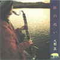
- 月のテーマ
- ファンファーレ〜うまい話
- 記憶のシマ（真謝島航路）
- 波だ・ロングバージョン
- 不完全な愛のハバネラ
- 月の浜
- おもらい小唄
- 水中
- 告白のハバネラ
- 波だ・ギターソロ
- 告白のための四重奏
- 道草のために（武蔵野7/8）
- フラタニゼーション・ソング
- 満月の夕
- かえろう
- THERE WILL BE A HAPPY MEETING (IN GLORY)
- 大熊亘 (clarinet,keyboards)
- 太田恵資 (violin)
- 松永孝義 (bass)
- 桜井芳樹 (guitars,mandolin)
- 坂本弘道 (cello)
- 関島岳郎 (tuba,trumpet,trombone)
- 植村昌弘 (drums)
- 宇野世志恵 (しま太鼓 on 3.)
- Samm Bennett (percussions on 14.15.16.)
- 平安隆 (vocals,sansin on 14.)
- 河村博司 (guitars on 14.)
- 奥野真哉 (accordion on 14.)
- 西岡清志 (bass on 14.)
- 永原元 (drums on 14.)
- 伊丹英子 (ゴロス,囃し on 14.)
- 古謝美佐子 (囃し on 14.)
RESPECT RECORDS: RES-33 (1999)
#なんつーか強力な内容です。凄いアグレッシヴです、ちょっと通して聞くと疲れるかも。覚悟が必要。タイトでヘヴィですごいですねー。
- horizon
- the count
- life insurance
- rough
- marmots
- I fell down
- milk
- earth in the stew with motherhood
- fuzzy
- magic hands
- she
- unplugged
- John King (guitars,vocals)
- ホッピー神山 (keyboards,samples,guitars)
- 大友良英 (turn-table,guitars,shugg-drum)
- 加藤英樹 (bass,metals,guitars)
- 山木秀夫 (drums,bass)
- 村田陽一 (trombone)
God Mountain: GMCD-003
#
下の時に買い損ねた、田荘荘の映画「藍風筝」のサントラです。文化大革命の辺りの頃の中国の映画らしいのですが、見てません。この作品の母国、中国では上映禁止とか。
GROUND-ZEROを先に聴いていると、同じ時期にこんな音を作っていたのが信じられないような、静かで深みのある音。
サントラなんで一曲一曲は短いですけど、とても長い一曲の断片をいろんな角度から見てるような感じ。特に標題曲が好きです。どんな感じに映像に乗っかるのか見てみたくなりました。(2002.4.15)
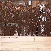
- Main Title - Short Version
- Crow Song - Opening
- Main Title - Long Version
- Wedding Song
- Newly - Mariied Couple
- Crow Song - Birth
- Courtyard 1 - Childhood
- The Blue Kite 1
- Anxiety
- Parting
- Letter
- Sparrow
- Crow Song - Toy Glocken Version
- Repentance
- Main Title - Altered Version
- Courtyard 2
- Crow Song - Moving
- Children Fight
- Crow Song - Mother & Son
- The Blue Kite 2
- Undercurrent 1
- Undercurrent 2
- Countyard 3
- Countyard 3 - Alterd Version
- Crow Song - Mother & Son 2
- Anixienty - Altered Version
- Crow Song - Culture Revolution
- Crow Song - Ending
- Ending Title
- 大友良英 (sampler,cymbals)
- 千野秀一 (piano,toy piano,prepared piano,synthesizer)
- 秋岡歐 (bandolin,banjo-cavaquinho)
- 高良久美子 (percussions,vibraphone,toy glocken,synthesizer)
- 内橋和久 (guitars on 7.)
- 野田茂則 (jew's harp on 9.26.)
- YI TIAN (child vocal on 2.28.)
- LU LUPING (mother's vocal on 3.)
- CHEN XIAOMAN (child narration on 27.)
TRIGRAM: S&T-001 (1994)
#大友良英さんの香港映画のサントラです、本当は「青い凧」ってのを捜したんですけど、買うべきときに買わなかったんで、見つからなくなっちゃいました。そんな訳でコレ。
なんだか懐かしさを感じるオルガンの音とか聴いてると、小学校の頃とかを思い出させるような。
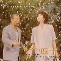
- *
- Summer Snow
- Ah-ngor's Theme
- Lost March -city version
- *
- The Thread Snaps
- Left Behind
- Lost March -alternative version
- The Twilight Years
- Speed Techno
- Strange Japanese Dance Music
- The Clam
- Lost March -town version
- To Live
- Repose
- *
- Pigeons on the Roof
- Ah-ngor's Theme - Reprise
- 大友良英 (guitars,sampler)
- 千野秀一 (school organ,sampler)
- 松本治 (trombone,euphonium)
- 菊地成孔 (sax)
- 内橋和久 (guitars,tenor ragged banjo)
- 植村昌弘 (drums)
- 芳垣安洋 (djembe,cymbals)
- Jim O'Rouke (guitars on 2.20.)
- 一噌幸弘 (篠笛 on 12.)
- 大蔵雅彦 (shaanai on 14.)
- 清水郁雄 (drum machine on 11.)
- YOSHIMI (sampled voice on 11.)
- 綾 (sampled voice on 11.)
KIM WORKSHOP: STK-003 (1996)
#確かディスクユニオンか何処かで買ったんだけど、これはあんまり気に入ってなかったりします。
OTOMO NEW JAZZ QUINTETの極初期の演奏が聞けます。
- Bath Cream 1
- Police Impossible 1
- シャボン玉 -bubbly version-
- Tatoo
- El Derecho De Vivir En Pas [aka: Heiwa Ni Ikiru Kenri]
- Elegy -new jazz version-
- Bath Cream 2
- シャボン玉 -electro version-
- Sad Theme -film version-
- Black and White
- Bath Cream 3
- Somber Anthem
- Sad Theme -new jazz version-
- シャボン玉 -solo sax version-
- Elegy -film version-
- Police Impossible 2
- シャボン玉 -ending version-
- 大友良英 (guitars,turntables,electronics)
- 菊地成孔 (tenor sax,alto sax)
- ナスノミツル (bass)
- Sachiko M. (sampler)
- 益子樹 (keyboards,guitars)
track 5.6.13.17. by OTOMO NEW JAZZ QUINTET
- 大友良英 (guitars)
- 菊地成孔 (tenor sax)
- 津上研太 (alto sax)
- 水谷浩章 (contrabass)
- 芳垣安洋 (drums,pocket-trumpet)
BANDAI MUSIC ENTERTAINMENT: SKCA-1002 (1999.10.21)
#P-VINEからのリリース。
大友良英ってなんとなくわからなくって今まであんまり聞いてこなかった(Ground-Zeroとかライヴとかで何回か見てる)んですけどね。
これはルパン三世とかの音楽の山下毅雄さんのトリビュート物です。参加メンツは以下の通り
大友良英周辺の人々でガッチリって感じです、それにオリジナルを歌ってたチャーリー・コーセーとか。9,15はNOVO-TONO(Phew+山本+植村+えとう+西村)で4.10.はHOAHIO(HACO+松原+八木)の演奏と言う事になってます。これだけメンバーこんがらがってるとどっちでも良い感じですけど。
遠藤賢司の
力入ったジャイアントロボとか、Phewさんのふにゃふにゃしたガンバとか色々面白いのはあるんですけど。16曲目から17曲目に続く所、ノスタルジックな風景に水が流れてくるみたいに入ってくる松原幸子さんの出すサイン波がとてもとても綺麗で、ちょっとやられちゃいました。Ground-Zeroのライヴ見たときに松原幸子さんってなんかわかんなかったんですけど。すごいなーって、今日はじめて思って。
音楽聴いてこんなビックリも久しぶりかも。(1999.10.10)
- プレイガールBGM
- ルパン三世 Ending Theme
- ジャイアントロボ
- スーパージェッター
- 悪魔くんオープニングテーマ
- 涙から明日へ
- 七人の刑事 PLOT-1
- 七人の刑事 PLOT-2
- ガンバのうた
- 冒険ガボテン島
- 佐武と市捕物控オームニングテーマ
- 大岡越前オープニングタイトル
- ルパン三世ワルサーのテーマ
- ルパン三世 Ending Theme
- 冒険者たちのバラード
- 煙の王様
- Song for T.Y.
- 大友良英 (turntale,synthesizers,guitars,sampler,collage)
- 菊地成孔 (sax on 1.8.13.)
- 津上研太 (sax on 1.8.13.)
- 南博 (piano on 1.13.14.)
- 高良久美子 (vibraphone on 1.4.10.)(marimba on 16.)
- 水谷浩章 (bass on 1.8.13.14.)
- 芳垣安洋 (drums on 1.8.13.)(percussions on 10.)
- 松原幸子 (sampler on 1.)
- 伊集加代子 (vocals on 1.2.8.12.133.
- 和田夏代子 (vocals on 1.8.13.)
- チャーリー・コーセイ (vocals on 2.13.14.)
- 今堀恒雄 (guitars on 2.)
- ナスノミツル (bass on 2.10.)
- 益子樹 (drum programming on 2.10.)
- 山下透 (whistle on 2.11.)(piano on 2.4.5.8.10.)(backing vocals on 3.)
- 遠藤賢司 (vocals on 3.)
- 鬼怒無月 (guitars on 3.6.9.15.)
- えとうなおこ (keyboards on 3.9.15.)
- 西村雄介 (bass on 3.9.15.)
- 植村昌弘 (drums on 3.9.15.)
- 松原幸子 (sound effects on 3.13.)(sampler on 4.5.10.11.16.17.)
- 山下泉 (backing vocals on 3.)(whistle on 4.)
- HACO (vocals,toy on 4.10.)
- 八木美知依 (Mongolian koto,toy on 4.10.)
- メグゥ (voice of Super Jetter on 4.)
- 天鼓 (vocals on 5.)
- 坂本弘道 (saw on 5.)
- 山本精一 (vocals on 6.15.)(guitars on 9.)
- Phew (vocals on 9.15.)
- ユタカワサキ (synthesizers on 9.)
- 永田一直 (synthesizers on 9.)
- 吉田アミ (vocals on 11.)
- 田中悠美子 (太竿三味線 on 11.)
- 石川高 (笙 on 11.)
- 菊地雅章 (bass on 11.)
- 千野秀一 (piano on 16.)
- 秋岡歐 (bandolin on 16.)
- 今井和雄 (guitars on 16.)
- 山下毅雄 (sampled guest on 7.12.)
P-VINE RECORDS: PCD-5804 (1999.9.10)
#最近とてもハマっている、大友良英さんのCD。
実は昔はそんなに....好きじゃなかったんですけど。要するにGROUND-ZERO解散以降の、この極小の世界になってからは好んで聴いてます。
このアルバムは笙と正弦波の世界、微妙なゆらぎやモアレが気持ちいいです。正弦波ってスピーカーで聞くと正面から出ているような気がしないです。脳の中を通りぬけて行くような、最近は世界で一番綺麗な音色なんじゃないかと思ってます。
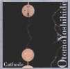
- Modulation #2
- Cathode #1
- Cathode #2
- Modulation #1
- 大友良英
- SACHIKO M. (samplers on 1.2.4.)(sine wave generator on 1.4.)
- 今堀恒雄 (acoustic guitar on 1.)
- えとうなおこ (piano,prepared with electronices,reverse-cymals piano on 2.)
- 田中悠美子 (futozao-shamisen on 2.)
- Ishikawa Ko (sho on 1.)(reverse-sho with electronics on 2.)
- Kudo Miho (violin on 2.)
- Mochizuki Naoya (cello on 2.)
- Kikuchi Masaaki (contrabass on 2.)
- Yoshida Ami (voice on 2.)
- Yamashita Toru (whistling on 2.)
- Kondo Yopshiaki (tape manipulation on 2.)
TZADIK: TZ-7051 (1999)
#「Cathode」「Anode」の中間的なコンセプトの作品、らしいです。まぁ即興に対する制限がどーのとか、作曲と即興の関係がどーのとかはよく分からないんだけど（評論家でも演奏者でも無いしね）。なんだかこのサイン波と即興から出てくる音響って、いわゆる「エレクトロニカ」って呼ばれてる人たち（ひとまとめに括ってるわけでなくて、「いわゆる」ね）とは随分違うものみたいです。
とにかく3曲目の、鍾乳洞の奥に居るみたいな研ぎ澄まされた音響がとても好きです。(2003.5.10)
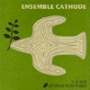
- Cathode #4
- Cathode #5
- Cathode #3 (Variation of Modulation #1)
- 大友良英 (turntable on 2.)
- 杉本拓 (electric guitar on 1-3.)
- 秋山徹次 (turntable,contact microphone on 1.)
- 芳垣安洋 (waterphone on 1.)(percussion on 3.)
- 高良久美子 (snare drum on 1.)(vibraphone,percussion on 3.)
- 植村昌弘 (bells on 1.)
- 吉田アミ (voice on 1.)
- イトケン (crotales on 1.)
- 古田マリ (snare drum on 1.)(crotales,percussion on 3.)
- 一楽儀光 (cymbal,bow on 1.3.)
- Sachiko M. (sine waves,contact microphone on 1-3.)
- 西陽子 (prepared 17絃箏 on 1-3.)
- Andrea Neumann (inside piano on 2.)
- 石川高 (笙 on 3.)
Improvised Music from Japan: IMJ-502 (2002)
#新宿PIT-INNでの
OTOMO NEW JAZZ QUINTETのライヴで購入。ライヴ終了後ステージにて大友さんが持ってきたCDを物販してました、「どんなですか？」って聞いたら、「電子音、けっこう激しい」とか言ってました。
んで帰りヘッドホンで聴いた時はちょっとイマイチかな？と思ってたんですが、家に帰ってスピーカーで聴いて見たらやっぱり印象が変わりました、とっても綺麗な音楽です。(表記には無かったけど12曲目に爆音ノイズ)
ほとんどサイン波とノイズだけで構成されているんですが、こんな事書く手も止まってしまうくらいの一瞬を持っている音でした。リズムもビートもメロディーも無いので万人に薦められるわけでは無いですけど。(2000.8.22)
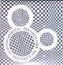
- DT-1
- DT-2
- DT-3
- DT-4
- DT-5
-
F.M.N. SOUND FACTORY: FSC-015
#魚喃キリコ原作の「blue」という映画の大友良英さんによるサウンドトラック。元々の漫画は昔読んだ事が有って、細い線とトーンを使わない影絵みたいな画面が印象的な感じの漫画でした。ストーリーは自分にはちょっと感傷的すぎたようだったんですけど、絵は好きです。（魚喃キリコは「ハルチン」とか好き）
まぁ漫画の話はそこそこにしといてこのサントラですけど、基本的には「青い凧」とかの路線を汲んだような繊細な音になってます。今回はSachiko M.不参加のせいか、電子音の占める割合は非常に少ないです。ONJQからの流れもちょっと感じるような、この人独特な真摯な感じが気持ちイイです。
キーボードのえとうなおこ(NOVO-TONO,Guilietta Machine)さんも好きで買ったんですけど、この人の参加による音への影響はあんまり無いみたい。そーゆー意味ではちょっとアテが外れた感じかな？1曲目の芳垣安洋さんのトランペットがスゲー良かったです。
ONJQのライヴ盤を聴いたときにも似たような事書いたんですけど、徹夜明けの帰路を歩いてるよーなイメージ。この人のこの作風は好きだなぁ。(2003.3.1)

- blue 1 (long version)
- painting 1 (big band)
- blue 2 (acoustic guitar version)
- video 1
- blue 3 (short version)
- painting 2 (quartet)
- video 2 (the blue kite)
- blue 4 (demo version)
- painting 3 (duo)
- the sky
- the sea
music inspired from 魚喃キリコ,安藤尋
composed and produced by 大友良英
recorded by 近藤祥昭 at GOK SOUND in 2001.10-2002.9
- 大友良英 (guitars)(synth on 4.10.)
- えとうなおこ (electric piano,synth)(pump organ on 2.)
- 芳垣安洋 (drums,bombo,karimba)(trumpet on 1.11.)
- 栗原正己 (recorder,bass)
- 魚喃キリコ (percussions on 2.11.)
- 市川実日子 (percussions on 2.11.)
- 安藤尋 (percussions on 2.11.)
- 宮崎大 (percussions on 2.11.)
- 佐々木ますみ (percussions on 2.11.)
- 本調有香 (percussions on 2.11.)
- 坪井美雪 (percussions on 2.11.)
WEATHER/HEADS: WEATHER-015/HEADZ-4 (2003.3.1)
#例によって弟の持ち物、いつのまにかこんなのまで聴く22才になってました。
大友良英New Jazz Quintetのアルバムの予定が、ゲスト沢山だったんでNew Jazz Ensambleになってます。っていうか戸川純とPHEWって・・・有りえねー。
「諦念プシガンガ」は戸川純の1stから。っていうかPHEWが歌ってるよぉ。
「破片風景」は
MOSTの曲、「遠い響き」と「夢」はえとうなおこ作曲。「Eureka」はJim O'Rouke。
- Preach
- 夢
- 諦念プシガンガ
- 遠い響き
- Eureka
- 破片風景
- 大友良英 (guitars)
- 水谷章浩 (bass)
- 津上研太 (alto sax on 1-3.5-7.)(soprano sax on 4.)
- 菊地成孔 (soprano sax on 1.2.4.)(tenor sax on 3.5-7.)
- 芳垣安洋 (drums on 1.2.5-7.)(trumpet on 2.3.6.)(percussions on 3.)
- SACHIKO M. (sin waves on 2.3.5-7.)
- 益子樹 (DX-7,SH101,effects,hot tuch noises on 3.5-7.)
- 戸川純 (vocals on 1.6.7.)
- PHEW (vocals on 2.7.)
TZADIK: TZ-7238 (2002)
#えー、「Swee-Pee」はWayne Shorter、「Hat & Beard」はEric Dolphy、「Eureka」はJim O'Roukeの曲です。2002.3.17新宿PIT-INNでのライヴ。
自分はあんまりジャズ詳しくないですけど、自分の頭の中の「ジャズ」って音楽はこんな感じです。危うくて、綺麗で、力強くて。大友良英さんが何で今こんな音を演っているのかはわからないですけど、好きで本気でやってるんだなーと言うのは感じます。
とにもかくにも「Eureka」が良いです、なんていうか徹夜でセックスした後の夜明けみたいな感じの（した事ないけど）。一瞬想起したのは
KING CRIMSON/ISLANDSの表題曲。(2002.)
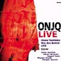
- Swee-Pee〜There
- Flutter
- Hat & Beard
- Eureka
- 大友良英 (guitars)
- 菊地成孔 (tenor sax)
- 津上研太 (alto sax)
- 水谷浩章 (bass)
- 芳垣安洋 (drums,trumpet)
DIW: DIW-912 (2002)
#小川美潮さんのvapからのソロアルバム。後でSONYから出るアルバムとは随分印象が違います。白井良明さんのプロデュースで、ユーモラスな感じのアルバム。こうして聴くとやっぱ板倉文と小川美潮って相性が良いんだなと、改めて思いました。
- おーい
- 行っといで
- 時計屋
- ポテトロイド
- おかしな午後
- 光の糸 金の糸
- 花の子供
produced by 白井良明
- 小川美潮 (vocals,piano)
- 白井良明 (guitars,bass,percussions on 1.2.3.5.7.)
- 小滝満 (keyboards,programming on 1.2.5.)
- 橿渕哲郎 (drums,percussions on 1.2.5.)
- 中原信雄 (bass on 3.)
- 近藤達郎 (keyboards,harmonica on 3.)
- 清水一登 (vibraphone on 3.)
- 友田慎吾 (drums,percussions on 3.)
- 水村敬一 (drums,percussions on 4.)
- 西尾明博 (drums,percussions on 4.)
- 幸田実 (bass on 4.)
- 平沢幸雄 (guitars on 4.)
- 田村恵 (指笛 on 5.)
- 板倉文 (acoustic guitars on 5.)
- 細野晴臣 (programming on 6.)
- 渋谷毅 (piano on 7.)
- 川端民雄 (bass on 7.)
vap: VPCC-83002
#エピックからの初アルバム、ちょっと散漫な内容だった前作に比べ元Killing Timeのメンバーやその周辺の人々がバックでとても充実した内容です。とてもポップで聴きやすいわりには細かいところまで作り込まれています。
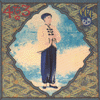
- デンキ
- Four to Three
- 夜店の男
- 野ばら
- On the Road
- 記憶
- ほほえみ
- 天国と地獄
- 窓
- おかしな午後
- 小川美潮 (vocals)
- 青山純 (drums,percussions)
- MECKEN (bass)
- Ma*To (tabla,synthesizers)
- BA NA NA (synthesizers)
- 近藤達郎 (keyboards,piano,synthesizers,clarinet,harmonica)
- 板倉文 (guitars,synthesizers,charango,vocals)
- 平沢幸雄 (guitars on 1.)
- 斎藤ネコstrings (strings)
- 小滝満 (synthesizer on 6.)
- AQ石井 (programming)
EPIC SONY RECORDS: ESCB-1120 (1991.2.21)
#3枚目、このアルバムもクオリティ高いです。伸びやかな歌声が気持ち良いです。私の好きな成田忍さんも参加してますし。
- ウレシイの素
- きもちのたまご
- LINK
- 恋
- MARBLE
- 走れ自転車
- Charming
- PICNIC
- ひとりごと
- 人と星の間
- 遠い夏
EPIC SONY RECORDS: ESCB-1278 (1992)
#3枚目です、結構いろいろな人が曲を作っていてバラエティに富んでます。小川美潮らしさはそのまんまですが、１曲目とか本当にいい曲だなと思います。残念ながらこれ以降はアルバムは出ていないです。
- はじめて
- 檸檬の月
- ふたつのドア
- SHAMBHALINE I
- SHAMBHALINE II
- TALL NOSER
- DEAR MR.OPTIMIST
- MONDAY
- CHAT SHWO
- BLUE
- 小川美潮 (vocals,keyboards)
- 青山純 (drums,percussions)
- 近藤達郎 (keyboards,synthesizers)
- MECKEN (bass)
- Ma*To (synthesizers,programming)
- BANANA-UG (synthesizers)
- 板倉文 (guitars)
- 浦山秀彦 (guitars on 3.)
- 高橋章 (programming on 2.7.)
- Whacho (percussions on 4.5.7.8.)
- 村田陽一 (tombone on 5.)
- 平原まこと (flute,alto sax on 5.6.)
- 山根公男 (clarinet on 5.)
- 小曽根みほ (clarinet on 5.)
- 及川豪 (bass clarinet on 5.)
- 森田格 (fagotto on 5.)
- 相馬充 (flute on 6.)
- Sandii (backing vocal on 6.)
- 福岡ユタカ (backing vocal on 6.)
- 大川俊司 (synth-bass on 10.)
EPIC SONY RECORDS: ESCB-1410 (1993.6.23)
#分類は....きっとテクノ歌謡って事になるんでしょうね。野見祐二さんの昔やってたテクノポップです。なんかで名前を知ってて、CD化されたみたいなんで買ってみました。うーんと正直言ってイマイチ、なんか帯の参加メンバーに騙されたよーな気がする....特に鈴木さえ子 + 金子飛鳥って辺りにちょっとクルものがあったんですけど。
参加してないけど、上野耕路さんのセンスを感じる.....ちょっとゲルニカっぽいのかな？あ、坂本龍一さんのエレピのソロはさすがに良いです。
- 恋のテロリストNo.1
- 踊るクエン酸回路
- 真昼の星
- Music Bomb Start! (音楽爆弾)
- アジアの恋
- 野見祐二
- 萩原義衛
- 吉永敬子 (vocals on 1.5.)
- 佐橋佳幸 (guitars on 1.2.)
- 鈴木さえ子 (drums arrange on 1.2.)
- EPO (vocals on 2.)
- 小林智 (vocals on 2.)
- 岩崎律子 (voice on 2.)
- 尾形由利 (vocals on 3.)
- 坂本龍一 (piano on 3.)
- 金子飛鳥 (violin on 5.)
- 岡野ハジメ (bass on 5.)
MIDI: MDCL-1343 (original release 1986)
#なんだかそんなに忙しく無いはずの仕事が急に忙しくなって、見に行くはずの菊地成孔トリオが見に行けなくって、そいでもってShi-Shonenの再発CDも地元じゃ売ってなくってムカついて古本屋を漁ってたら、これが500円で売ってました。
バンドじゃ無いほうのoptical*8の二枚目です。メンバーは見ての通りです、全一曲になっていて、まぁほとんど全部セッションみたいな内容です。リズムセクションが面白くってなんだか急に盛り上がったりするのが良かったです。(2000.3.16)
- Discipline
Angel interceptor
Fancing the final curtain?
Insade my prisacy
- Hoppy神山 (synthesizers,sample)
- Marc Ribot (guitars)
- Sebatian Steinberg (bass)
- Douglas E.Bowne (drums)
- E.J.Rodriguez (percussions)
- スティーブ衛藤 (metals)
GOD MOUNTAIN: GMCD-004 (1993)
#FRICTIONのRECK、GROUND-ZEROの
大友良英など、凄い強力にクセのある人々を集めたバンド。このメンツでバンドとして成り立ってるのが不思議、すぐケンカ別れしそーで。
音は...とにかくリズムセクションが強力。グシャグシャしていながらも硬質でスピード感が有って、バンドの音です。この辺のフリー/アバンギャルド系に良くある即興の音とは明かに違います、ロックしてて格好良いです。
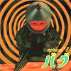
- deafening
- penetration
- summer slave
- night fade
- bug
- mio corazon
- cripples & kings
- mind-roasting groovers
- bush push
- cuff
- god speed
- ホッピー神山 (synthesizers,violins,noises,vocals)
- reck (bass,guitars,vocals)
- 大友良英 (guitars,turn table,backing vocals)
- 湊雅文 (drums,percussions,backing vocals)
GOD MOUNTAIN: GMCD-012
#ライヴアルバムだけど....ちょっと私にはイマイチでした。もうちょいカチッとやってくれるとイイんですけど。
LIQUID DISK
- Bug
- Halle Halle (Sanctus)
- Pentration
- Riots
- Nightfade
- God Speed
GAS DISK
- Bush Push
- Mio Corazon
- Fate
- God Mountain
- Neurogenetic Circuit
- ホッピー神山 (vocals,synthesizers,samples,tapes,violin,noise)
- Reck (bass,guitars,vocals)
- 大友良英 (guitars,bass,turntalbes)
- 湊雅史 (drums)
GOD MOUNTAIN: GMCD-022/023 (1995)
#三橋美香子さんのバンド"ONI"の1枚めのアルバム。オフノートレーベルからのリリース。独特な節回しの歌いかたと、個性的なバックがなんといったらいいかわからない雰囲気を醸し出しています。
- すまなんだ
- ララバイ
- カラハリ島の出来事 故郷編
- 回覧板
- 未確認物体
- ファーム
- 途切れた数え唄
- 黄泉
- 今夜の気持ち
- かわいい手管
- 魔法の船
- 呪縛
- 君
all lyrics and music by 三橋美香子
all music arranged by ONI
excerpt #7 ONI,田中悠美子,仙波清彦 #12 ONI,仙波清彦
- 三橋美香子 (vocals)
- 近藤達郎 (keyboards,accordion,clarinet,sampler,bass,voice)
- 植村昌弘 (drums,percussions,voice)
- 浦山秀彦 (guitars,ukulele,sampler,saz,cuatro)
- 小川美潮 (vocals on 9.)
- 仙波清彦 (percussions on 7.12.)
off note/lucky biard: LB-01 (1997)
#清水一登率いる（こう書くとかっちょいいなぁ）オパビニア。ついにCDがリリースされました。
とりあえず、1曲目はシャクシャイン/新大久保ジェントルメンなどでも演奏されていた曲。プレイヤーの人数が減っているのを感じないです、手数多いぃ。
2曲目「Pre-cambria dreamin'」は、今までライヴとかで「19」って言ってた19拍子の曲。
えーと「ふぐ汁（昨夜の）」は
BUSON仙波に収録されてた曲。だいぶイメージが違うような。
「ヒョーロク玉」は前に清水+鬼怒+向島のライヴで演奏されてる、ゆったりとしたバイオリンのメロディーが印象的な曲。オパビニアのアルバムに入るとは思わなかった。
「Minerals〜Tasmania」は
おUにも収録されてますけど、きちんとしたスタジオ録音としてはコレが初めてになります。スピード感が有ってかっこいいぃ。
ライヴとの印象と較べると、どの曲も結構緻密にオーバーダブされてる感じです。今回気合入れて作ってるなーと思わせます。KILLING TIMEなんかの80年代のアノ辺の音と、90年代のBONDAGE FRUITとかの音が上手く融合されてるよーに思います。個人的には宝物とか呼んでもいーようなCDです、コレは。(2003.4.18)
- 情熱の通り雨 -Shower (passing) of passion
- Pre-cambria dreamin'
- Crunchy brains
- ふぐ汁 (昨夜の) -Fugujiru (lukewarm)
最低人 variations -"The Lowests" variations
- a) part 1
- b) intrusion of pre-cambrians
- c) part 2
- (Slight) Googli-Moogli
- ヒョーロク玉 -Hyorokudama
- Minerals
- 〜Tasmania
- 清水一登 (keyboards,clarinet,xylophone)
- 鬼怒無月 (guitars,bandolin)
- 芳垣安洋 (drums,percussions)
- 向島ゆり子 (violin on 2.9.)
INFINITE RECORDS/TUTINOKO Lable: TUTI-0005 (2003.4.18)
- 金星
- オルタナティブ・ファンカホリック
- ギオン
- GO
- サテライト・グルーブ
- ヒューマン・トルネード
- 日本解散
- 空中はB
- グッバイ！サブマリーン
- 幽霊山脈のテーマ
- クール
- おやじ
- ロケンロー・ファンタジア
- WE ARE ハロー
- ホワイト・アワー
- アーメン
- 山本精一 (guitars,vocals,violin,percussion,piano,synthesizer)
- 津山篤臣 (bass,vocals,drums,synthesizer,drum machine)
- 長谷川CHEW (drum,computer,tape)
- 山崎圭巳 (alto sax)
- 河村勇 (alto sax)
- 川西聡 (tenor sax)
- 河村光司 (bariton sax,tuba)
- 大串崇 (drums on 4.12.15.)
- YOSHIMI (trumpet)
meldac: MECI-28001 (1995.6.21)
- SUGAR CLIP
- MAYA
- RICO PICO
- CLICK PSYCLING
POLYSTAR/trattoria: PSCR-5586/MENU 115. (1997.2.26)
#ホッピー神山さんとかWhachoさんとかが参加しています。個人的にはPUGSとイメージがダブるのですが、なんと言うか壊れ度はこっちの方が高いかも。
- Ego Saga
- Strawberry Punch
- Mosquito Heaven
- Tin-Poco De I need you
- step-Ass
- Office Lady from Adult Oriented Rock
- Bermuda
- Jasmine (ver 0.54)
- Theme from ozone bros.
- Mongolfire-Vampire
- TOFU
- Raga Latin
- Pick Pockets
- Requiem from Olivia (TINKA)
- Morphine
- Night of speed coaster
- Silicon Valley High
- His name is Chinju
- what ?
- Jose
- chiclo
- Captain Drone Beetle
- The course of RASTMAN
- Raidon as PUNK
- Sing out
- Sing out (Reprise)
- Tesshi (guitars,sax,chorus)
- Whacho (percussions,drums,chorus)
- Bon-Juro (tuba,trumpet,chorus)
- Hoppy (synthesizers,tapes,noiz violin,guitars)
- Mash (trumpet)
- Olivia (vocals)
- Fujiwara Hiroaki (violin)
弁天レーベル: BNTN-023